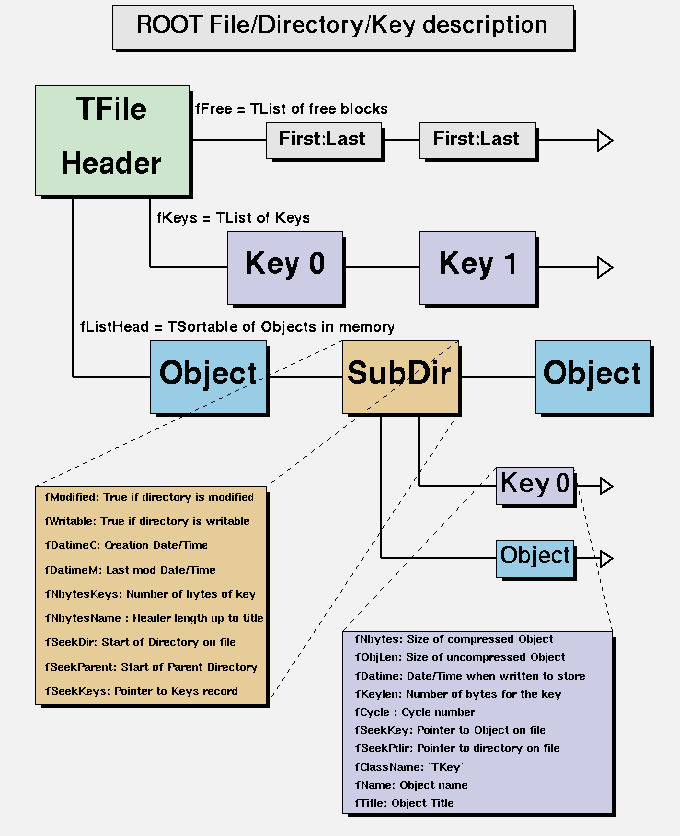
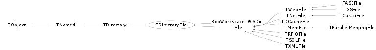

class TDirectoryFile: public TDirectory
A ROOT file is structured in Directories (like a file system). Each Directory has a list of Keys (see TKeys) and a list of objects in memory. A Key is a small object that describes the type and location of a persistent object in a file. The persistent object may be a directory./*  */
The structure of a file is shown in TFile::TFile
Function Members (Methods)
public:
| TDirectoryFile() | |
| TDirectoryFile(const char* name, const char* title, Option_t* option = "", TDirectory* motherDir = 0) | |
| virtual | ~TDirectoryFile() |
| void | TObject::AbstractMethod(const char* method) const |
| virtual void | Add(TObject* obj, Bool_t replace = kFALSE) |
| static void | TDirectory::AddDirectory(Bool_t add = kTRUE) |
| static Bool_t | TDirectory::AddDirectoryStatus() |
| virtual void | Append(TObject* obj, Bool_t replace = kFALSE) |
| virtual Int_t | AppendKey(TKey* key) |
| virtual void | TObject::AppendPad(Option_t* option = "") |
| virtual void | Browse(TBrowser* b) |
| virtual void | Build(TFile* motherFile = 0, TDirectory* motherDir = 0) |
| virtual Bool_t | cd(const char* path = 0) |
| static Bool_t | TDirectory::Cd(const char* path) |
| static TClass* | Class() |
| virtual const char* | TObject::ClassName() const |
| virtual void | TDirectory::Clear(Option_t* option = "") |
| virtual TObject* | TNamed::Clone(const char* newname = "") const |
| virtual TObject* | CloneObject(const TObject* obj, Bool_t autoadd = kTRUE) |
| virtual void | Close(Option_t* option = "") |
| virtual Int_t | TNamed::Compare(const TObject* obj) const |
| virtual void | Copy(TObject&) const |
| static TDirectory*& | TDirectory::CurrentDirectory() |
| static void | TDirectory::DecodeNameCycle(const char* namecycle, char* name, Short_t& cycle) |
| virtual void | Delete(const char* namecycle = "") |
| virtual void | TDirectory::DeleteAll(Option_t* option = "") |
| virtual Int_t | TObject::DistancetoPrimitive(Int_t px, Int_t py) |
| virtual void | TDirectory::Draw(Option_t* option = "") |
| virtual void | TObject::DrawClass() constMENU |
| virtual TObject* | TObject::DrawClone(Option_t* option = "") constMENU |
| virtual void | TObject::Dump() constMENU |
| static void | TDirectory::EncodeNameCycle(char* buffer, const char* name, Short_t cycle) |
| virtual void | TObject::Error(const char* method, const char* msgfmt) const |
| virtual void | TObject::Execute(const char* method, const char* params, Int_t* error = 0) |
| virtual void | TObject::Execute(TMethod* method, TObjArray* params, Int_t* error = 0) |
| virtual void | TObject::ExecuteEvent(Int_t event, Int_t px, Int_t py) |
| virtual void | TObject::Fatal(const char* method, const char* msgfmt) const |
| virtual void | FillBuffer(char*& buffer) |
| virtual TKey* | FindKey(const char* keyname) const |
| virtual TKey* | FindKeyAny(const char* keyname) const |
| virtual TObject* | TDirectory::FindObject(const char* name) const |
| virtual TObject* | TDirectory::FindObject(const TObject* obj) const |
| virtual TObject* | FindObjectAny(const char* name) const |
| virtual TObject* | FindObjectAnyFile(const char* name) const |
| virtual TObject* | Get(const char* namecycle) |
| virtual Int_t | GetBufferSize() const |
| const TDatime& | GetCreationDate() const |
| virtual TDirectory* | GetDirectory(const char* apath, Bool_t printError = false, const char* funcname = "GetDirectory") |
| virtual Option_t* | TObject::GetDrawOption() const |
| static Long_t | TObject::GetDtorOnly() |
| virtual TFile* | GetFile() const |
| virtual const char* | TObject::GetIconName() const |
| virtual TKey* | GetKey(const char* name, Short_t cycle = 9999) const |
| virtual TList* | TDirectory::GetList() const |
| virtual TList* | GetListOfKeys() const |
| const TDatime& | GetModificationDate() const |
| virtual TObject* | TDirectory::GetMother() const |
| virtual TDirectory* | TDirectory::GetMotherDir() const |
| virtual const char* | TNamed::GetName() const |
| virtual Int_t | GetNbytesKeys() const |
| virtual Int_t | GetNkeys() const |
| void | TDirectory::GetObject(const char* namecycle, void*& ptr) |
| virtual void* | GetObjectChecked(const char* namecycle, const char* classname) |
| virtual void* | GetObjectChecked(const char* namecycle, const TClass* cl) |
| virtual char* | TObject::GetObjectInfo(Int_t px, Int_t py) const |
| static Bool_t | TObject::GetObjectStat() |
| virtual void* | GetObjectUnchecked(const char* namecycle) |
| virtual Option_t* | TObject::GetOption() const |
| virtual const char* | TDirectory::GetPath() const |
| virtual const char* | TDirectory::GetPathStatic() const |
| virtual Long64_t | GetSeekDir() const |
| virtual Long64_t | GetSeekKeys() const |
| virtual Long64_t | GetSeekParent() const |
| virtual const char* | TNamed::GetTitle() const |
| virtual UInt_t | TObject::GetUniqueID() const |
| TUUID | TDirectory::GetUUID() const |
| virtual Bool_t | TObject::HandleTimer(TTimer* timer) |
| virtual ULong_t | TNamed::Hash() const |
| virtual void | TObject::Info(const char* method, const char* msgfmt) const |
| virtual Bool_t | TObject::InheritsFrom(const char* classname) const |
| virtual Bool_t | TObject::InheritsFrom(const TClass* cl) const |
| virtual void | TObject::Inspect() constMENU |
| void | TObject::InvertBit(UInt_t f) |
| virtual TClass* | IsA() const |
| virtual Bool_t | TObject::IsEqual(const TObject* obj) const |
| virtual Bool_t | TDirectory::IsFolder() const |
| virtual Bool_t | IsModified() const |
| Bool_t | TObject::IsOnHeap() const |
| virtual Bool_t | TNamed::IsSortable() const |
| virtual Bool_t | IsWritable() const |
| Bool_t | TObject::IsZombie() const |
| virtual void | ls(Option_t* option = "") const |
| void | TObject::MayNotUse(const char* method) const |
| virtual TDirectory* | mkdir(const char* name, const char* title = "") |
| virtual Bool_t | TObject::Notify() |
| void | TObject::Obsolete(const char* method, const char* asOfVers, const char* removedFromVers) const |
| virtual TFile* | OpenFile(const char* name, Option_t* option = "", const char* ftitle = "", Int_t compress = 1, Int_t netopt = 0) |
| static void | TObject::operator delete(void* ptr) |
| static void | TObject::operator delete(void* ptr, void* vp) |
| static void | TObject::operator delete[](void* ptr) |
| static void | TObject::operator delete[](void* ptr, void* vp) |
| void* | TObject::operator new(size_t sz) |
| void* | TObject::operator new(size_t sz, void* vp) |
| void* | TObject::operator new[](size_t sz) |
| void* | TObject::operator new[](size_t sz, void* vp) |
| virtual void | TDirectory::Paint(Option_t* option = "") |
| virtual void | TObject::Pop() |
| virtual void | TDirectory::Print(Option_t* option = "") const |
| virtual void | Purge(Short_t nkeep = 1) |
| virtual void | TDirectory::pwd() const |
| virtual Int_t | TObject::Read(const char* name) |
| virtual void | ReadAll(Option_t* option = "") |
| virtual Int_t | ReadKeys(Bool_t forceRead = kTRUE) |
| virtual Int_t | ReadTObject(TObject* obj, const char* keyname) |
| virtual void | TDirectory::RecursiveRemove(TObject* obj) |
| virtual TObject* | TDirectory::Remove(TObject*) |
| virtual void | ResetAfterMerge(TFileMergeInfo*) |
| void | TObject::ResetBit(UInt_t f) |
| virtual void | rmdir(const char* name) |
| virtual void | Save() |
| virtual void | TObject::SaveAs(const char* filename = "", Option_t* option = "") constMENU |
| virtual Int_t | SaveObjectAs(const TObject* obj, const char* filename = "", Option_t* option = "") const |
| virtual void | TObject::SavePrimitive(ostream& out, Option_t* option = "") |
| virtual void | SaveSelf(Bool_t force = kFALSE) |
| void | TObject::SetBit(UInt_t f) |
| void | TObject::SetBit(UInt_t f, Bool_t set) |
| virtual void | SetBufferSize(Int_t bufsize) |
| virtual void | TObject::SetDrawOption(Option_t* option = "")MENU |
| static void | TObject::SetDtorOnly(void* obj) |
| virtual void | SetModified() |
| virtual void | TDirectory::SetMother(TObject* mother) |
| virtual void | TDirectory::SetName(const char* newname) |
| virtual void | TNamed::SetNameTitle(const char* name, const char* title) |
| static void | TObject::SetObjectStat(Bool_t stat) |
| virtual void | SetSeekDir(Long64_t v) |
| virtual void | TNamed::SetTitle(const char* title = "")MENU |
| virtual void | SetTRefAction(TObject* ref, TObject* parent) |
| virtual void | TObject::SetUniqueID(UInt_t uid) |
| virtual void | SetWritable(Bool_t writable = kTRUE) |
| virtual void | ShowMembers(TMemberInspector& insp) |
| virtual Int_t | Sizeof() const |
| virtual void | Streamer(TBuffer& b) |
| void | StreamerNVirtual(TBuffer& b) |
| virtual void | TObject::SysError(const char* method, const char* msgfmt) const |
| Bool_t | TObject::TestBit(UInt_t f) const |
| Int_t | TObject::TestBits(UInt_t f) const |
| virtual void | TObject::UseCurrentStyle() |
| virtual void | TObject::Warning(const char* method, const char* msgfmt) const |
| virtual Int_t | Write(const char* name = 0, Int_t opt = 0, Int_t bufsize = 0) |
| virtual Int_t | Write(const char* name = 0, Int_t opt = 0, Int_t bufsize = 0) const |
| virtual void | WriteDirHeader() |
| virtual void | WriteKeys() |
| Int_t | TDirectory::WriteObject(const void* obj, const char* name, Option_t* option = "", Int_t bufsize = 0) |
| virtual Int_t | WriteObjectAny(const void* obj, const char* classname, const char* name, Option_t* option = "", Int_t bufsize = 0) |
| virtual Int_t | WriteObjectAny(const void* obj, const TClass* cl, const char* name, Option_t* option = "", Int_t bufsize = 0) |
| virtual Int_t | WriteTObject(const TObject* obj, const char* name = 0, Option_t* option = "", Int_t bufsize = 0) |
protected:
| Bool_t | TDirectory::cd1(const char* path) |
| static Bool_t | TDirectory::Cd1(const char* path) |
| virtual void | CleanTargets() |
| virtual void | TObject::DoError(int level, const char* location, const char* fmt, va_list va) const |
| void | TDirectory::FillFullPath(TString& buf) const |
| void | Init(TClass* cl = 0) |
| void | TObject::MakeZombie() |
| void | TDirectory::RegisterContext(TDirectory::TContext* ctxt) |
| void | TDirectory::UnregisterContext(TDirectory::TContext* ctxt) |
private:
| TDirectoryFile(const TDirectoryFile& directory) | |
| void | operator=(const TDirectoryFile&) |
Data Members
public:
| enum { | kCloseDirectory | |
| }; | ||
| enum TObject::EStatusBits { | kCanDelete | |
| kMustCleanup | ||
| kObjInCanvas | ||
| kIsReferenced | ||
| kHasUUID | ||
| kCannotPick | ||
| kNoContextMenu | ||
| kInvalidObject | ||
| }; | ||
| enum TObject::[unnamed] { | kIsOnHeap | |
| kNotDeleted | ||
| kZombie | ||
| kBitMask | ||
| kSingleKey | ||
| kOverwrite | ||
| kWriteDelete | ||
| }; |
protected:
| Int_t | fBufferSize | Default buffer size to create new TKeys |
| TDirectory::TContext* | TDirectory::fContext | !Pointer to a list of TContext object pointing to this TDirectory |
| TDatime | fDatimeC | Date and time when directory is created |
| TDatime | fDatimeM | Date and time of last modification |
| TFile* | fFile | pointer to current file in memory |
| TList* | fKeys | Pointer to keys list in memory |
| TList* | TDirectory::fList | List of objects in memory |
| Bool_t | fModified | true if directory has been modified |
| TObject* | TDirectory::fMother | pointer to mother of the directory |
| TString | TNamed::fName | object identifier |
| Int_t | fNbytesKeys | Number of bytes for the keys |
| Int_t | fNbytesName | Number of bytes in TNamed at creation time |
| TString | TDirectory::fPathBuffer | !Buffer for GetPath() function |
| Long64_t | fSeekDir | Location of directory on file |
| Long64_t | fSeekKeys | Location of Keys record on file |
| Long64_t | fSeekParent | Location of parent directory on file |
| TString | TNamed::fTitle | object title |
| TUUID | TDirectory::fUUID | Unique identifier |
| Bool_t | fWritable | true if directory is writable |
| static Bool_t | TDirectory::fgAddDirectory | !flag to add histograms, graphs,etc to the directory |
Class Charts
{kind=link}
{kind=link}
{kind=link}
{kind=link}

Function documentation
TDirectoryFile(const char* name, const char* title, Option_t* option = "", TDirectory* motherDir = 0)
Create a new DirectoryFile *-*- *-* ========================== A new directory with name,title is created in the current directory The directory header information is immediatly saved on the file A new key is added in the parent directory When this constructor is called from a class directly derived from TDirectoryFile, the third argument classname MUST be specified. In this case, classname must be the name of the derived class. Note that the directory name cannot contain slashes.
void Init(TClass* cl = 0)
Initialize the key associated with this directory (and the related data members.
Int_t AppendKey(TKey* key)
-*-*-*Insert key in the linked list of keys of this directory *-* =======================================================
void Build(TFile* motherFile = 0, TDirectory* motherDir = 0)
-*-*Initialise directory to defaults *-* ================================
Bool_t cd(const char* path = 0)
Change current directory to "this" directory . Using path one can change the current directory to "path". The absolute path syntax is: file.root:/dir1/dir2 where file.root is the file and /dir1/dir2 the desired subdirectory in the file. Relative syntax is relative to "this" directory. E.g: ../aa. Returns kTRUE in case of success.
TObject * CloneObject(const TObject* obj, Bool_t autoadd = kTRUE)
Make a clone of an object using the Streamer facility. If the object derives from TNamed, this function is called by TNamed::Clone. TNamed::Clone uses the optional argument newname to set a new name to the newly created object. If autoadd is true and if the object class has a DirectoryAutoAdd function, it will be called at the end of the function with the parameter gDirector. This usually means that the object will be appended to the current ROOT directory.
TObject * FindObjectAnyFile(const char* name) const
Scan the memory lists of all files for an object with name
TDirectory * GetDirectory(const char* apath, Bool_t printError = false, const char* funcname = "GetDirectory")
Find a directory named "apath". It apath is null or empty, returns "this" directory. Otherwise use the name "apath" to find a directory. The absolute path syntax is: file.root:/dir1/dir2 where file.root is the file and /dir1/dir2 the desired subdirectory in the file. Relative syntax is relative to "this" directory. E.g: ../aa. Returns 0 in case path does not exist. If printError is true, use Error with 'funcname' to issue an error message.
void Delete(const char* namecycle = "")
Delete Objects or/and keys in a directory *-* ========================================= namecycle has the format name;cycle namecycle = "" same as namecycle ="T*" name = * means all cycle = * means all cycles (memory and keys) cycle = "" or cycle = 9999 ==> apply to a memory object When name=* use T* to delete subdirectories also To delete one directory, you must specify the directory cycle, eg. file.Delete("dir1;1"); examples: foo : delete object named foo in memory foo* : delete all objects with a name starting with foo foo;1 : delete cycle 1 of foo on file foo;* : delete all cycles of foo on file and also from memory *;2 : delete all objects on file having the cycle 2 *;* : delete all objects from memory and file T*;* : delete all objects from memory and file and all subdirectories WARNING If the key to be deleted contains special characters ("+","^","?", etc that have a special meaning for the regular expression parser (see TRegexp) then you must specify 2 backslash characters to escape the regular expression. For example, if the key to be deleted is namecycle = "C++", you must call mydir.Delete("C\\+\\+")).
void FillBuffer(char*& buffer)
-*-*-*-*-*-*Encode directory header into output buffer *-* =========================================
TKey * FindKeyAny(const char* keyname) const
Find key with name keyname in the current directory or its subdirectories. NOTE that If a key is found, the directory containing the key becomes the current directory
TObject * FindObjectAny(const char* name) const
Find object by name in the list of memory objects of the current directory or its sub-directories. After this call the current directory is not changed. To automatically set the current directory where the object is found, use FindKeyAny(aname)->ReadObj().
TObject * Get(const char* namecycle)
return pointer to object identified by namecycle namecycle has the format name;cycle name = * is illegal, cycle = * is illegal cycle = "" or cycle = 9999 ==> apply to a memory object examples: foo : get object named foo in memory if object is not in memory, try with highest cycle from file foo;1 : get cycle 1 of foo on file The retrieved object should in principle derive from TObject. If not, the function TDirectoryFile::GetObject should be called. However, this function will still work for a non-TObject, providing that the calling application cast the return type to the correct type (which is the actual type of the object). NOTE: The method GetObject offers better protection and avoids the need for any cast: MyClass *obj; directory->GetObject("some object",obj); if (obj) { ... the object exist and inherits from MyClass ... } VERY IMPORTANT NOTE: In case the class of this object derives from TObject but not as a first inheritance, one must use dynamic_cast<>(). Example 1: Normal case: class MyClass : public TObject, public AnotherClass then on return, one can do: MyClass *obj = (MyClass*)directory->Get("some object of MyClass"); Example 2: Special case: class MyClass : public AnotherClass, public TObject then on return, one must do: MyClass *obj = dynamic_cast<MyClass*>(directory->Get("some object of MyClass")); Of course, dynamic_cast<> can also be used in the example 1.
void * GetObjectUnchecked(const char* namecycle)
return pointer to object identified by namecycle. The returned object may or may not derive from TObject. namecycle has the format name;cycle name = * is illegal, cycle = * is illegal cycle = "" or cycle = 9999 ==> apply to a memory object VERY IMPORTANT NOTE: The calling application must cast the returned object to the final type, eg MyClass *obj = (MyClass*)directory->GetObject("some object of MyClass");
void * GetObjectChecked(const char* namecycle, const char* classname)
See documentation of TDirectoryFile::GetObjectCheck(const char *namecycle, const TClass *cl)
void * GetObjectChecked(const char* namecycle, const TClass* cl)
return pointer to object identified by namecycle if and only if the actual object is a type suitable to be stored as a pointer to a "expectedClass" If expectedClass is null, no check is performed. namecycle has the format name;cycle name = * is illegal, cycle = * is illegal cycle = "" or cycle = 9999 ==> apply to a memory object VERY IMPORTANT NOTE: The calling application must cast the returned pointer to the type described by the 2 arguments (i.e. cl): MyClass *obj = (MyClass*)directory->GetObjectChecked("some object of MyClass","MyClass")); Note: We recommend using the method TDirectoryFile::GetObject: MyClass *obj = 0; directory->GetObject("some object inheriting from MyClass",obj); if (obj) { ... we found what we are looking for ... }
Int_t GetBufferSize() const
Return the buffer size to create new TKeys. If the stored fBufferSize is null, the value returned is the average buffer size of objects in the file so far.
TKey * GetKey(const char* name, Short_t cycle = 9999) const
-*-*-*Return pointer to key with name,cycle *-* ===================================== if cycle = 9999 returns highest cycle
void ls(Option_t* option = "") const
List Directory contents*-*-
*-* =======================
Indentation is used to identify the directory tree
Subdirectories are listed first, then objects in memory, then objects on the file
The option can has the following format:
[-d |-m][<regexp>]
Option -d means: only list objects in the file
-m means: only list objects in memory
The <regexp> will be used to match the name of the objects.
By default memory and disk objects are listed.
TFile * OpenFile(const char* name, Option_t* option = "", const char* ftitle = "", Int_t compress = 1, Int_t netopt = 0)
TDirectory * mkdir(const char* name, const char* title = "")
Create a sub-directory and return a pointer to the created directory. Returns 0 in case of error. Returns 0 if a directory with the same name already exists. Note that the directory name may be of the form "a/b/c" to create a hierarchy of directories. In this case, the function returns the pointer to the "a" directory if the operation is successful.
Int_t ReadKeys(Bool_t forceRead = kTRUE)
Read the KEYS linked list *-* ========================= Every directory has a linked list (fKeys). This linked list has been written on the file via WriteKeys as a single data record. It is interesting to call this function in the following situation. Assume another process1 is connecting this directory in Update mode -Process1 is adding/updating objects in this directory -You want to see the latest status from process1. Example Process1: obj1.Write(); obj2.Write(); gDirectory->SaveSelf(); Example Process2 gDirectory->ReadKeys(); obj1->Draw(); This is an efficient way (without opening/closing files) to view the latest updates of a file being modified by another process as it is typically the case in a data acquisition system.
Int_t ReadTObject(TObject* obj, const char* keyname)
Read object with keyname from the current directory Read contents of object with specified name from the current directory. First the key with keyname is searched in the current directory, next the key buffer is deserialized into the object. The object must have been created before via the default constructor. See TObject::Write().
void ResetAfterMerge(TFileMergeInfo* )
Reset the TDirectory after its content has been merged into another Directory. This returns the TDirectoryFile object back to its state before any data has been written to the file. The object in the in-memory list are assumed to also have been reset.
void rmdir(const char* name)
Removes subdirectory from the directory When diredctory is deleted, all keys in all subdirectories will be read first and deleted from file (if exists) Equivalent call is Delete("name;*");
void Save()
*-*-*-*-*Save recursively all directory keys and headers *-* ===============================================
Int_t SaveObjectAs(const TObject* obj, const char* filename = "", Option_t* option = "") const
Save object in filename, if filename is 0 or "", a file with "objectname.root" is created. The name of the key is the object name. If the operation is successful, it returns the number of bytes written to the file otherwise it returns 0. By default a message is printed. Use option "q" to not print the message.
void SaveSelf(Bool_t force = kFALSE)
Save Directory keys and header*-*- *-* ============================== If the directory has been modified (fModified set), write the keys and the directory header. This function assumes the cd is correctly set. It is recommended to use this function in the following situation: Assume a process1 using a directory in Update mode -New objects or modified objects have been written to the directory -You do not want to close the file -You want your changes be visible from another process2 already connected to this directory in read mode -Call this function -In process2, use TDirectoryFile::ReadKeys to refresh the directory
void SetBufferSize(Int_t bufsize)
set the default buffer size when creating new TKeys see also TDirectoryFile::GetBufferSize
void SetTRefAction(TObject* ref, TObject* parent)
Find the action to be executed in the dictionary of the parent class
and store the corresponding exec number into fBits.
This function searches a data member in the class of parent with an
offset corresponding to this.
If a comment "TEXEC:" is found in the comment field of the data member,
the function stores the exec identifier of the exec statement
following this keyword.
Int_t Sizeof() const
Return the size in bytes of the directory header *-* ================================================ Int_t nbytes = sizeof(Version_t); 2 nbytes += fDatimeC.Sizeof(); nbytes += fDatimeM.Sizeof(); nbytes += sizeof fNbytesKeys; 4 nbytes += sizeof fNbytesName; 4 nbytes += sizeof fSeekDir; 4 or 8 nbytes += sizeof fSeekParent; 4 or 8 nbytes += sizeof fSeekKeys; 4 or 8 nbytes += fUUID.Sizeof();
void Streamer(TBuffer& b)
Stream a class object*-*-*-*-*-*-*- *-* =========================================
Int_t Write(const char* name = 0, Int_t opt = 0, Int_t bufsize = 0) const
One can not save a const TDirectory object.
Int_t WriteTObject(const TObject* obj, const char* name = 0, Option_t* option = "", Int_t bufsize = 0)
Write object obj to this directory The data structure corresponding to this object is serialized. The corresponding buffer is written to this directory with an associated key with name "name". Writing an object to a file involves the following steps: -Creation of a support TKey object in the directory. The TKey object creates a TBuffer object. -The TBuffer object is filled via the class::Streamer function. -If the file is compressed (default) a second buffer is created to hold the compressed buffer. -Reservation of the corresponding space in the file by looking in the TFree list of free blocks of the file. -The buffer is written to the file. By default, the buffersize will be taken from the average buffer size of all objects written to the current file so far. Use TDirectoryFile::SetBufferSize to force a given buffer size. If a name is specified, it will be the name of the key. If name is not given, the name of the key will be the name as returned by obj->GetName(). The option can be a combination of: "SingleKey", "Overwrite" or "WriteDelete" Using the "Overwrite" option a previous key with the same name is overwritten. The previous key is deleted before writing the new object. Using the "WriteDelete" option a previous key with the same name is deleted only after the new object has been written. This option is safer than kOverwrite but it is slower. The "SingleKey" option is only used by TCollection::Write() to write a container with a single key instead of each object in the container with its own key. An object is read from this directory via TDirectoryFile::Get. The function returns the total number of bytes written to the directory. It returns 0 if the object cannot be written. WARNING: in name avoid special characters like '^','$','.' that are used by the regular expression parser (see TRegexp).
Int_t WriteObjectAny(const void* obj, const char* classname, const char* name, Option_t* option = "", Int_t bufsize = 0)
Write object from pointer of class classname in this directory obj may not derive from TObject see TDirectoryFile::WriteTObject for comments VERY IMPORTANT NOTE: The value passed as 'obj' needs to be from a pointer to the type described by classname For example with: TopClass *top; BottomClass *bottom; top = bottom; you can do: directory->WriteObjectAny(top,"top","name of object"); directory->WriteObjectAny(bottom,"bottom","name of object"); BUT YOU CAN NOT DO (it will fail in particular with multiple inheritance): directory->WriteObjectAny(top,"bottom","name of object"); We STRONGLY recommend to use TopClass *top = ....; directory->WriteObject(top,"name of object") see laso remarks in TDirectoryFile::WriteTObject
Int_t WriteObjectAny(const void* obj, const TClass* cl, const char* name, Option_t* option = "", Int_t bufsize = 0)
Write object of class with dictionary cl in this directory obj may not derive from TObject To get the TClass* cl pointer, one can use TClass *cl = TClass::GetClass("classname"); An alternative is to call the function WriteObjectAny above. see TDirectoryFile::WriteTObject for comments
void WriteDirHeader()
-*-*Overwrite the Directory header record *-* =====================================
void WriteKeys()
void operator=(const TDirectoryFile& )